| 日付 | 2026年5月30日（土） - 2026年5月31日（日） | ||||
|---|---|---|---|---|---|
| 山域 | 尾瀬 | ||||
| メンバー | 家族（妻） | ||||
| 山行形態 | 1泊2日テント泊 | ||||
| アクセス | 車 | ||||
| ルート (Map) |
|
土日とも晴れ予報の予定が入っていない週末。
家族で初のテント泊山行に行くことにする。目的地は燧ヶ岳。
この時期はミズバショウが咲くちょうど良い季節だ。
テントを張る場所は実質下界のため、初のテント泊にも最適の場所。
前回、燧ヶ岳に登ったのは2008年。当時は雨の中で登った。
今回は18年振りのリベンジ登山だ。
1日目
御池の駐車場に到着。標高1510m。
見事な快晴だ。
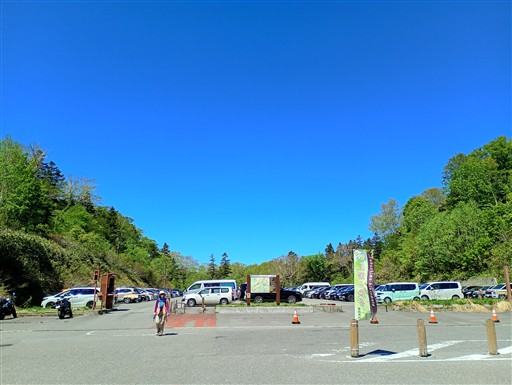
駐車場の奥の方は空いている。御池はアクセスが悪いからか思ったより人が少ない。
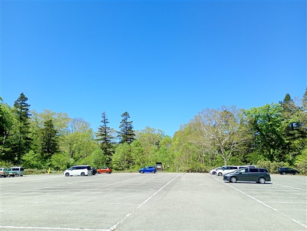
駐車場の奥が登山口だ。
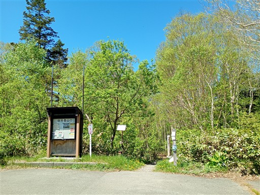
最初は木道を歩いていく。
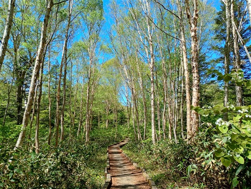
この辺りのミズバショウは生長しすぎている。
隙間にリュウキンカの花が咲いている。
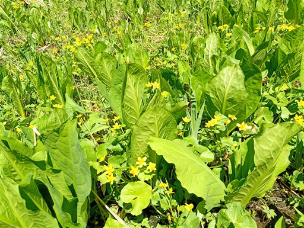
すぐに御池田代に出てくる。視界がパッと広がる。
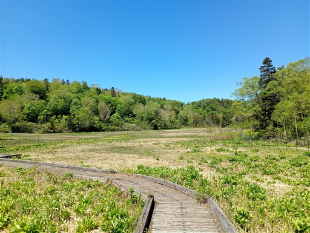
水の流れに沿って咲くミズバショウとリュウキンカ。
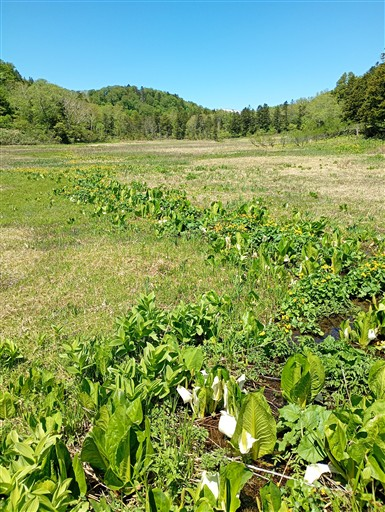
樹林帯に入っても、木道の脇にはところどころでミズバショウが見られる。
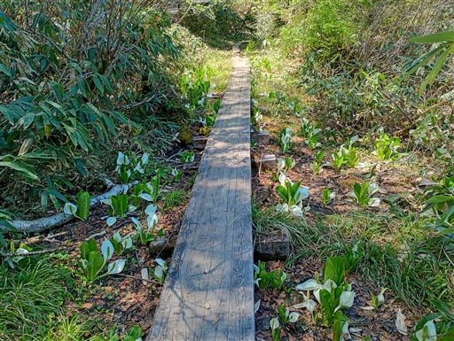
続いて姫田代。小さな湿原。
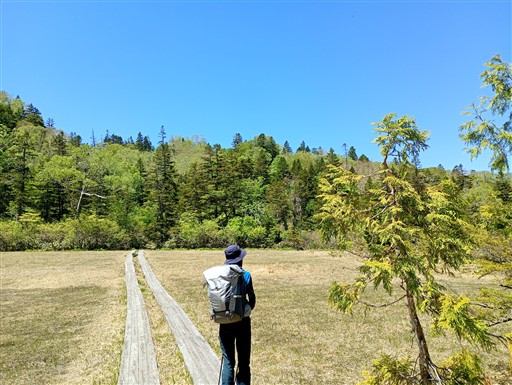
タテヤマリンドウがあちらこちらに咲いている。
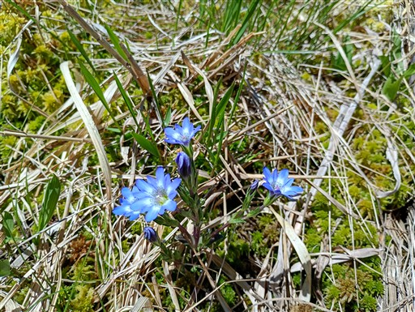
再び樹林帯へ。巨大な木の幹が密集して生えている。
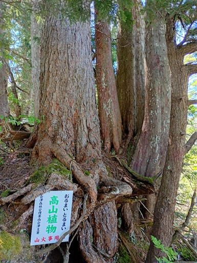
続いて上田代。湿原と森が交互に出てきて楽しい道だ。
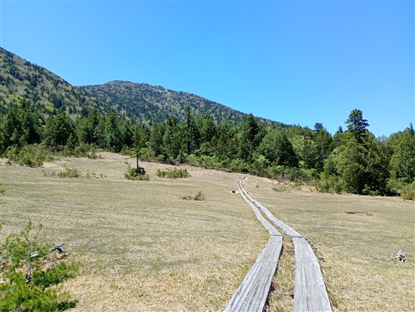
遠くに見えているのは平ヶ岳だろうか？
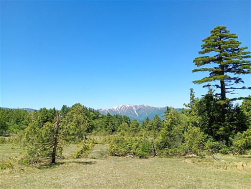
花の数は少ないが、小さな池塘が見られる。
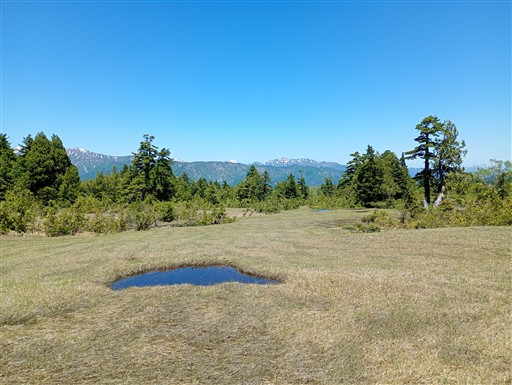
木橋で小さな沢を渡る。まだ残雪がある。
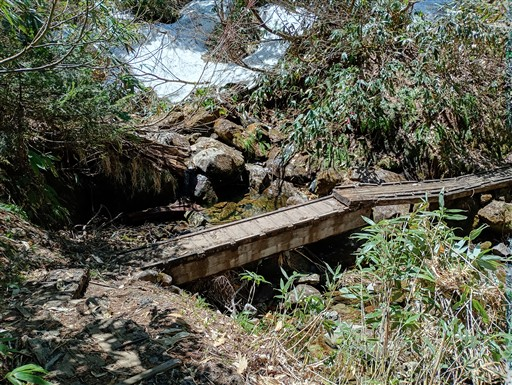
次々と湿原が現れる。
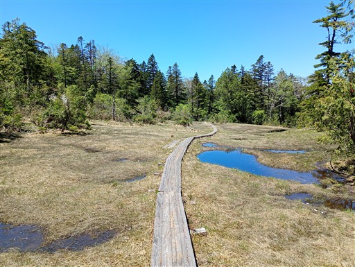
巨大な木の根が押し合っている。
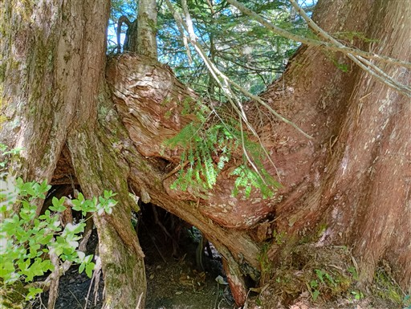
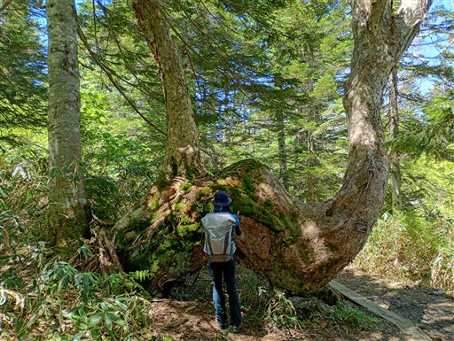
頭上にピンクリボンがある。冬はあそこまで雪が積もるのだろうか？
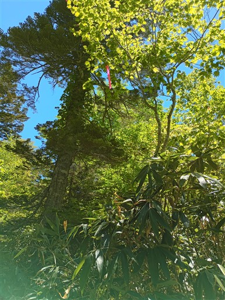
裏燧橋。立派な吊り橋だ。
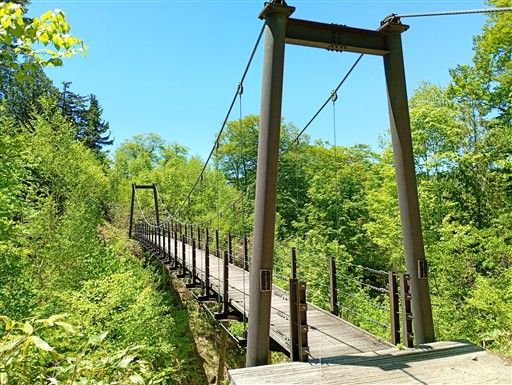
三条ノ滝の分岐点。尾瀬ヶ原に行くには左が近道だが、
今回は三条ノ滝も目的地の一つなので右へ行く。
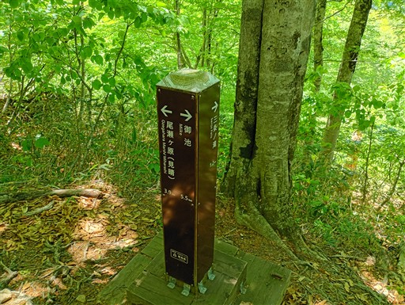
ブナの木が並んでいる。
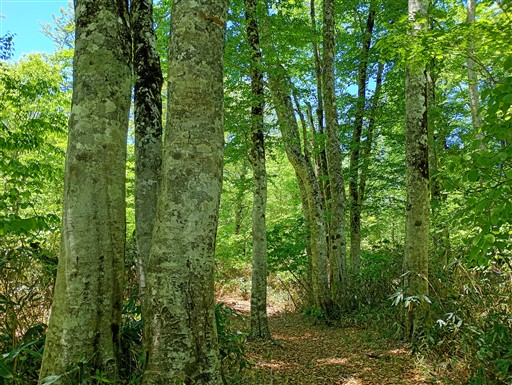
結構下る。下った分、あとで登り返す必要がある。
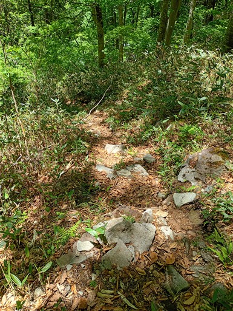
穴の開いた木道。ちょっと怖い場所だ。
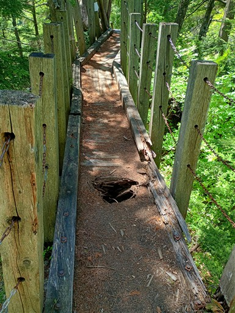
三条ノ滝に到着。落差100mある日本有数の豪快な滝だ。
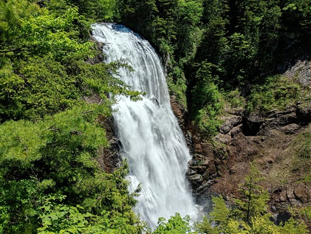
比較的新しい展望台。ベンチに座って滝を眺めながら昼食休憩をとる。
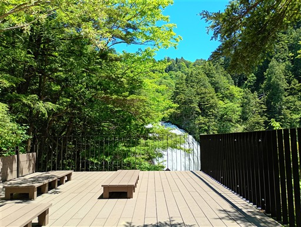
昼食を取ったら出発。途中、隙間から滝壺が見える場所がある。
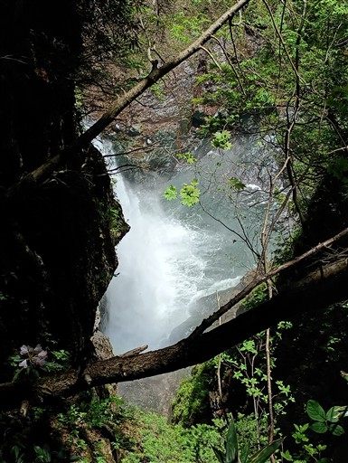
下りは急斜面だったが、登りの道は比較的傾斜が緩くて助かる。
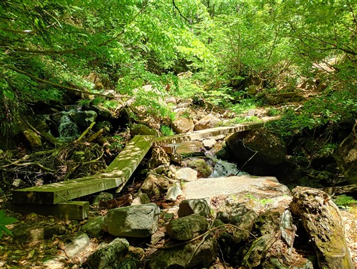
透明の水。泡が真っ白だ。
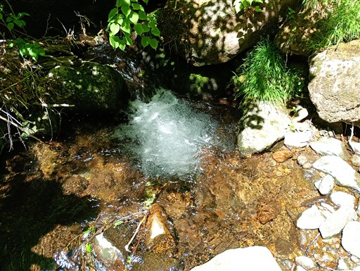
平滑の滝の展望台に到着。岩盤の上を流れる水が美しい。
川床を歩いてみたいが、三条ノ滝を超えた人しかあそこには行けないのだろうか？
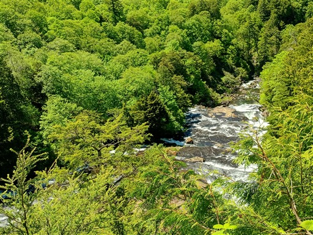
鎖が木にめり込んでいる。
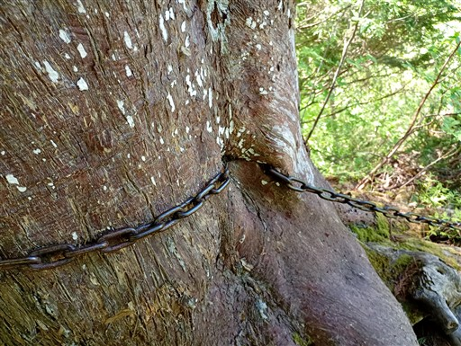
温泉小屋に到着。
御池～三条ノ滝ではほとんど人と出会わなかったのに、三条ノ滝からは人通りが多くなる。
尾瀬ヶ原から三条ノ滝を往復する人が多いようだ。
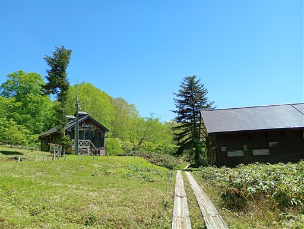
尾瀬ヶ原が近づいてくる。至仏山の頭が見えてきた。
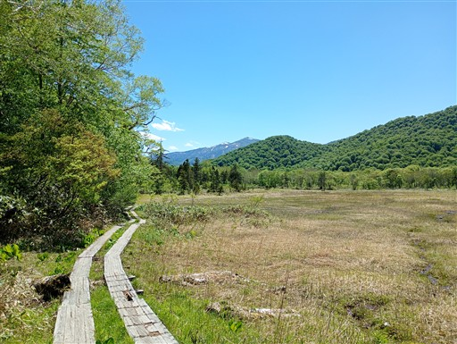
左手に見えているのは燧ヶ岳の頭だろうか？
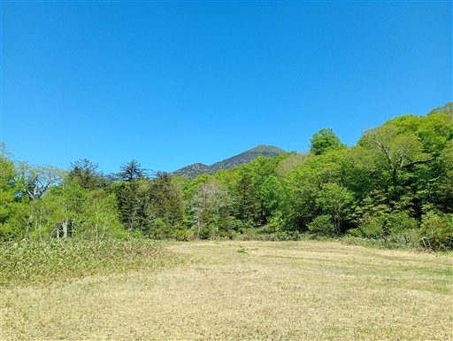
オタマジャクシの群れ。もう水があまり入って来なさそうな小さな水たまにり密集している。
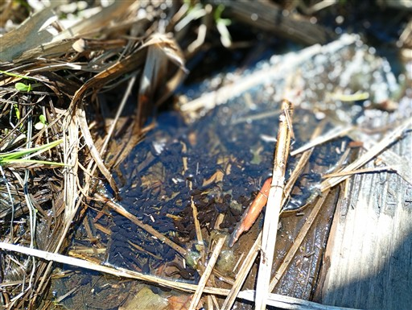
尾瀬ヶ原に到着する。
これまでの湿原とは全くスケール感が違う、とにかく広い湿原だ。
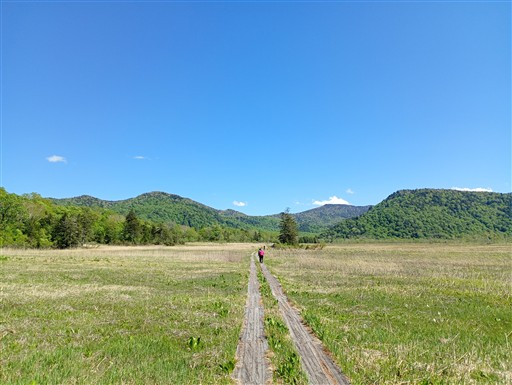
水際にリュウキンカの花が咲いている。
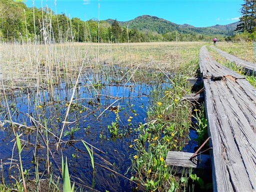
よく見ると、水の流れに沿ってリュウキンカが咲いているのが分かる。
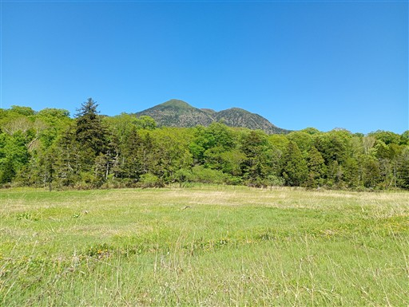
見晴に到着。
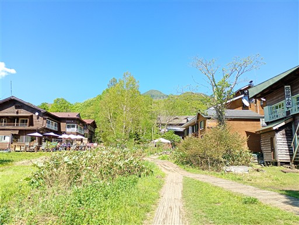
テント場に移動。もうすでに多くのテントが張られている。
手続きを済ませて設営を行う。
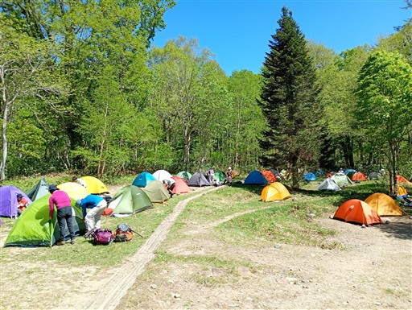
設営を済ませたら、軽装で尾瀬散策。
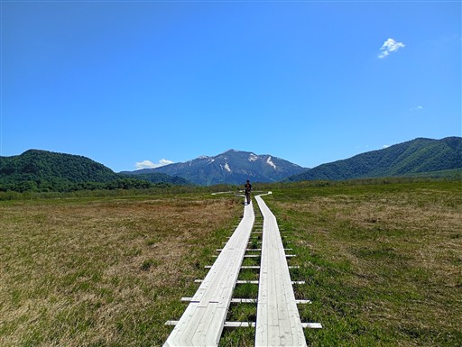
振り返ると燧ヶ岳が大きい。
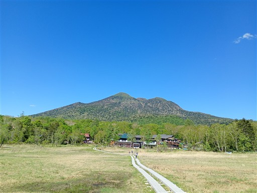
こちらは景鶴山。
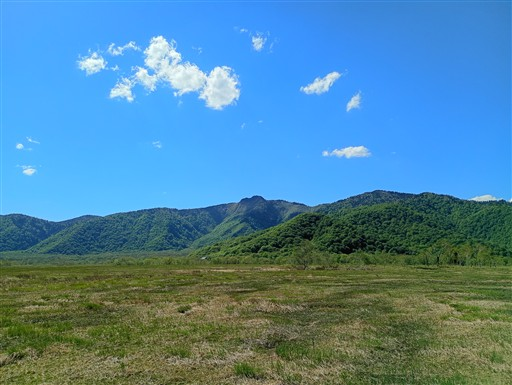
あちらこちらに池塘が広がる。
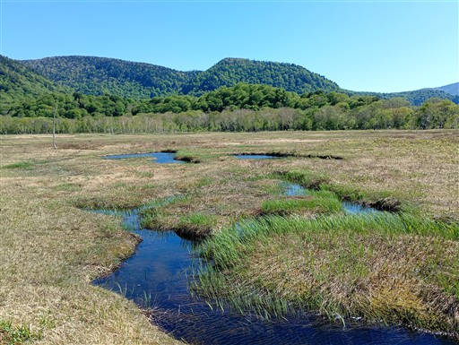
傾いた橋で沼尻川を渡る。
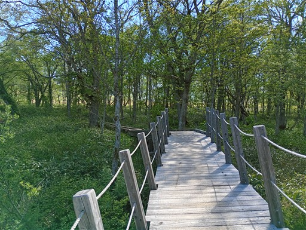
眼下を流れる沼尻川。
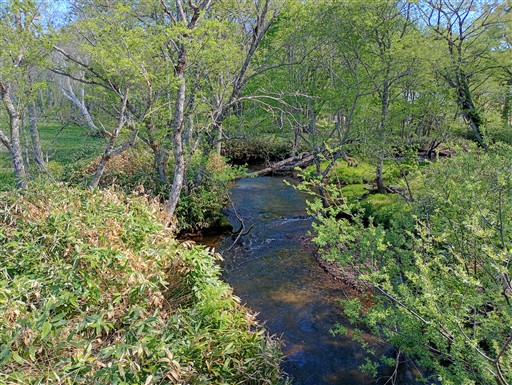
水の中にミツガシワの花が咲いている。
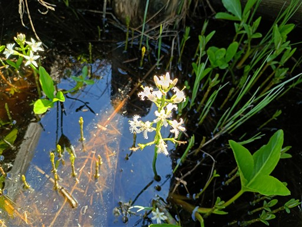
ミズバショウも見られるが、あまり数が多くない。
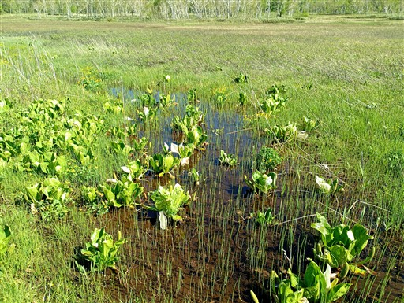
一方、リュウキンカはあちらこちらで見られる。
きれいな黄色い花を咲かせている。
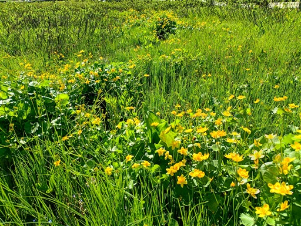
人通りはそこそこ。燧ヶ岳の麓にある見晴方面に向かう人が多い。
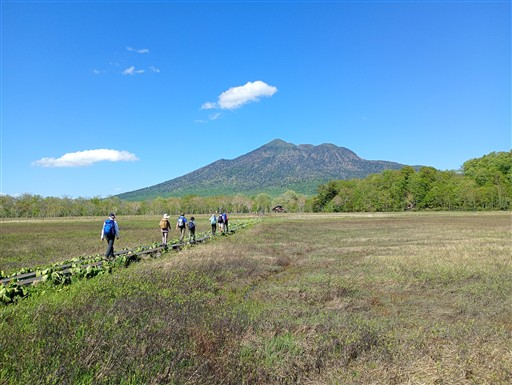
2ヶ所から水が注ぎこんでいるが、水が出ていく場所がない。
少し離れたこの場所から水が湧き出しているらしい。
もう少し先まで歩きたかったが、妻が疲れたと言っているので、尾瀬ヶ原散策はここまでとする。
ここでおやつ休憩をとる。
元来た道を引き返す。池塘の向こうに至仏山。何度見ても美しい姿だ。
燧ヶ岳とシラカバ。
ワタスゲだろうか？少しだけ見かける。
川沿いに咲くミズバショウ。
見晴に戻ってくる。夕飯はキムチ鍋。初めて宿泊山行でレトルト以外の料理に挑戦してみる。
今後レパートリーを増やしていきたい。夕飯後はのんびり景色を眺める。
夕暮れの至仏山。
斜めから陽を浴びると地面の凹凸が良く見える。
ヒメシャクナゲ。目立たない花だが、夕日を浴びると少し輝いて見える。
太陽が沈む。
尾瀬ヶ原を影が覆っていく。
日没直後の尾瀬ヶ原。
寝ようとしたら、尾瀬についての解説をしてくれると案内があったので見に行くことにする。
話が上手で飽きさせない40分だった。意外だったのは御池から来た人がほとんどいなかったこと。
大半は鳩待峠、あとは大清水、沼山峠、御池、富士見下が少しずつ。
すっかり夜。小屋はまだ明るい。
夜空を眺める。
夜のテント場。20時過ぎに就寝。